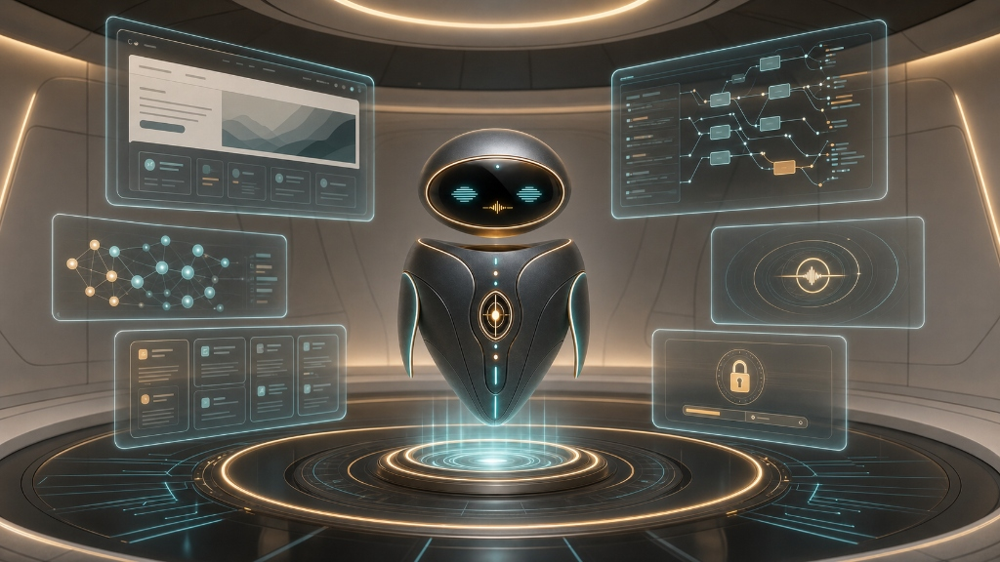
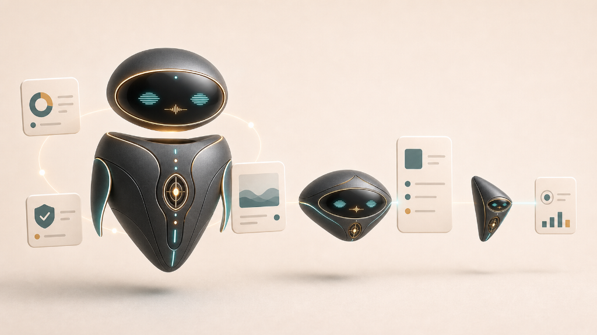

Soy NAI, tu guía a través de las galerías en penumbra. Aquí dentro, cada vitrina alberga un holograma matemático que late en tiempo real. Camina despacio, contempla en silencio y cuando una fórmula toque una fibra en ti, dispara tu cámara para capturar ese instante irrepetible.

Camina hacia cualquier vitrina en penumbra. Me acercaré contigo para contarte la verdad tras cada ecuación.
Instantes cazados en las vitrinas
Edición de Galería Firmada · Santiago de Chile
Impresión Fine Art pigmentada sobre papel de algodón de 310g. Moldura de madera negra con paspartú libre de ácido y vidrio. Cada pieza incluye certificado con la ecuación y firma a mano.